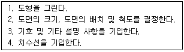
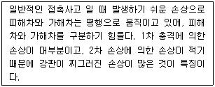

자동차차체수리기능사 (2012-10-20 기출문제)
1과목: 자동차공학
1. 발전기가 충전되지 않을 때 점등되는 것은?
- 유압경고등
- 충전경고등
- 연료경고등
- 브레이크 오일경고등
(정답률: 92%)

2. 바퀴 정렬장치에서 캠버에 대한 설명으로 틀린 것은?
- 캠버는 앞뒤 네 바퀴에 모두 존재하며 호칭도 동일하다.
- 캠버는 타이어의 마모에 관계있는 각도이다.
- 바퀴가 수직일 때의 캠버를 10°라고 한다.
- 크기는 수직선에 대한 바퀴중심선의 각도로서 표시한다.
(정답률: 76%)
3. 중소형 승용차에서 주로 사용하며 프레임과 차체를 확실히 구별하지 않고 일체구조로 된 차체의 명칭을 나타내는 용어가 아닌 것은?
- 언더보디
- 모노코크형 보디
- 프레임리스형 보디
- 유닛 컨스트럭션형 보디
(정답률: 54%)
4. 다음 중에서 승수기호와 그 뜻의 결합이 틀린 것은?
- T(테라) : 1012
- G(기가) : 109
- M(메가) : 106
- h(헥토) : 103
(정답률: 80%)
5. 국제단위계(SI단위)에서 가속도의 단위로 맞는 것은?
- m/s
- N
- m/s2
- kgf/cm2
(정답률: 73%)
6. 내연기관의 냉각장치에서 냉각수가 순환하는 경로를 나타낸 것으로 맞는 것은?
- 방열기 - 출구호스 - 물펌프 - 워터재킷 - 수온조절기 - 방열기
- 방열기 - 물펌프 - 출구호스 - 워터재킷 - 수온조절기 - 방열기
- 방열기 - 출구호스 - 물펌프 - 수온조절기 - 워터재킷 - 방열기
- 방열기 - 수온조절기 - 물펌프 - 워터재킷 - 출구호스 - 방열기
(정답률: 61%)
7. 고속 주행 중 타이어의 접지부가 후방에서 방생되는 물결모양으로 떠는 현상을 무엇이라고 하는가?
- 스탠딩 웨이브 현상
- 하이드로 플래닝 현상
- 페이드 현상
- 밴추리 효과
(정답률: 87%)
8. 공기가 압축될 경우 실린더 내에서 일어나는 현상으로 맞는 것은?
- 체적이 증가한다.
- 온도가 상승한다.
- 압력이 낮아진다.
- 아무런 변화가 없다.
(정답률: 81%)
9. 캡 오버형 트럭의 특징이 아닌 것은?
- 엔진의 전체 또는 대부분이 운전실 하부에 들어가 있다.
- 자동차의 높이가 높고 시야가 좋다
- 엔진룸의 면적이 보닛형에 비해 넓다.
- 자동차 길이가 동일할 때 적재함을 크게 할 수있다.
(정답률: 82%)
10. 자동차 차체에서 후드부의 구조명칭으로 틀린 것은?
- 클립
- 인슐레이터
- 후드힌지
- 도어패널
(정답률: 72%)
11. Fe에 12% 이상의 Cr을 합금시키면 강한 보호 피막이 생성되어 부동태화 되는데, 이 특징을 이용하여 녹이 발생되지 않게 한 강은?
- 스테인리스강
- 고속도강
- 합금공구강
- 탄소공구강
(정답률: 86%)
12. 다음 보기는 원도를 그리는 방법을 나열한 것이다. 그 순서가 맞는 것은?

- 1-2-3-4
- 2-1-3-4
- 1-2-4-3
- 2-1-4-3
(정답률: 78%)
13. 일반적인 금속의 특징 중 맞지 않는 것은?
- 최저 용융 온도의 금속은 Hg(-38.4℃), 최고 용융 온도는 W(3410℃)이다.
- 최소의 비중은 Li(0.53), 최대 비중은 Ir(22.5)이다.
- 일반적으로 용융 온도가 높으면 금속의 비중이 크다.
- 내열성과 경량성을 동시에 만족하는 재료를 얻기 쉽다.
(정답률: 81%)
14. 비금속 공구재료 중 맞지 않는 것은?
- 서멧(Cermet)은 세라믹스+메탈이다.
- 연삭숫돌의 무기질 결합재로 비트리파이드 (Vitrified)결합재와 실리케이트(Silicate) 결합재가 있다.
- 금속 결합재로는 다이아몬드 숫돌이 대표적이다.
- 인조연삭, 연마재로는 다이아몬드, 에머리(Emery)등이 있으며 버핑할 때 연마재로 쓴다.
(정답률: 55%)
15. 알루미늄의 물리적 성질 중 설명이 잘못된 것은?
- 비중이 약 2.7로서 가볍다.
- 용용점이 낮아 용해가 용이하다
- 전연성이 우수하다.
- 격자 상수는 체심입방격자이다.
(정답률: 56%)
16. 용접 및 가스 절단시 산화물이나 기타 유해물을 분리제거 하기 위해 사용하는 것은?
- 자동역류 방지장치
- 호스 체크밸브
- 봄 트롤리
- 플럭스
(정답률: 71%)
17. 자동차 보디(body) 수리용 저항 점용접기의 종류가 아닌 것은?
- 뺀지(pincer)형 용접건
- 투인 스폿건(twin spot gun)
- 플로드(prod)형 용접건
- 호크(Hoke)형 용접건
(정답률: 61%)
18. 다음 보기의 용접법 중에서 열원의 온도와 열의 집중도가 가장 낮고 변형이 가장 큰 용접법은?
- 플라즈마 젯트 용접
- TIG 용접
- MIG 용접
- 산소 아세틸렌가스 용접
(정답률: 66%)
19. 제도에서 도면을 표시할 때 실물과 같은 크기로 그릴 경우의 척도이며, 읽지 않더라도 치수나 모양의 착오가 적은 특징을 가진 것은?
- 배척
- NS
- 축척
- 현척
(정답률: 73%)
20. 연강 및 고장력강용 솔리드 와이어 YGW11에서 GW의 의미는 무엇인가?
- 용접 와이어
- 보호 가스
- 매그(MAG) 용접
- 주요 적용 강종
(정답률: 61%)
2과목: 자동차차체정비
21. 구리의 특성 중 설명이 틀린 것은?
- 전기 및 열의 양도체이다.
- 전성 연성이 좋아 가공이 용이하다.
- 화학적 저항력이 커서 부식이 쉽다.
- 아름다운 광택과 귀금속적 성질이 우수하다.
(정답률: 64%)
22. 피복 금속 직류 아크 용접의 정극성에 관한 사항으로 틀린 것은?
- 용접 홀더를 +극, 모재는 -극을 사용한다.
- 모재의 용입이 깊다.
- 용접봉의 용융이 느리다.
- 비드 폭이 좁다.
(정답률: 73%)
23. 전기 용접시 용접부의 결함이 아닌 것은?
- 오버랩
- 언더컷
- 슬래그 혼입
- 피복
(정답률: 80%)
24. 금속의 성질을 결정하는 가장 큰 요인은?
- 성분의 함량
- 결정 입자
- 담금질 정도
- 탄소 함유량
(정답률: 76%)
25. 표면경화 열처리 방법에 해당하지 않는 것은?
- 침탄법
- 질화법
- 고주파경화법
- 항온열처리법
(정답률: 74%)
26. 다음 중 리벳 크기를 나타낸 것은?
- 길이 × 면적
- 길이 × 무게
- 지름 × 무게
- 지름 × 길이
(정답률: 73%)
27. 자동차 프레임 손상 진단에서 프레임의 변형 부위 중 균열부분을 확인하고자 한다. 이때 일반적으로 가장 먼저 확인할 부분은 어느 부분인가?
- 프레임의 수평부분
- 프레임의 밑부분
- 프레임의 굴곡부
- 프레임의 옆부분
(정답률: 66%)
28. 다음 작업 중 성형에 속하지 않는 것은?
- 접기
- 굽히기
- 펀칭
- 오므리기
(정답률: 79%)
29. 다음 가스절단 작업의 결함의 종류가 아닌 것은?
- 기공
- 드래그
- 슬래그
- 균열
(정답률: 54%)
30. 자동차 보수도장에 있어서 도료의 건조장치 중 가장 바람직한 것은?
- 복사 대류에 의한 열풍 건조장치
- 복사에 의한 고온 다습한 열풍건조장치
- 습도가 많은 상온에서의 자연 건조장치
- 고온 다습한 실내에서의 자연 건조장치
(정답률: 86%)
31. 판금 공구의 특성 중 틀린 것은?
- 판금용 해머는 패널 수정 이외의 용도로 사용해서는 안 된다.
- 돌리는 패널모양에 맞추어 맞는 것을 골라 사용한다.
- 해머, 돌리, 스푼 모두 다 접촉면이 매끄럽게 유지되어야 한다.
- 스푼은 넓은 면을 수정하는 손잡이가 달린 돌리이다.
(정답률: 65%)
32. 각 차종의 조립에서 부품의 장착 방식이 다른 것은?
- 라디에이터 코어 서포트 어퍼
- 프론트 펜더 에이프런
- 엔진후드
- 데시패널
(정답률: 55%)
33. 차체 손상 진단시 다음 보기와 같은 손상의 형태를 무엇이라 하는가?

- 사이드 데미지 또는 브로드 사이드 데미지
- 사이드 스위핑
- 리어 엔드 데미지
- 롤 오버
(정답률: 61%)
34. 자동차, 냉장고, 가전제품 등 도막의 보호미화에 쓰이는 것은?
- 메타릭 에나멜
- 헤머톤 에나멜
- 축문 에나멜
- 멜라민 에나멜
(정답률: 76%)
35. 실링 건을 사용하여 충진작업할 때 유의사항 중 옳지 않은 것은?
- 기포나 빈틈이 없어야 한다.
- 실러가 접합부 속으로 충진 되게 한다.
- 모서리 부분은 멈추지 말고 빠르게 방향을 전환한다.
- 방아쇠를 작동하며 건을 작업자 앞쪽으로 당기며 작업한다.
(정답률: 71%)
36. 2차원 파손을 조절하고 승객의 안전성을 고려하여 모노코크바디에 특별한 영역을 만들었다. 이를 무엇이라고 하는가?
- 전면부
- 중앙부
- 크러쉬존
- 후면부
(정답률: 86%)
37. 자동차보수도장에서 가장 보편적인 도장 방법은?
- 에어 스프레이 도장
- 에어레스 스프레이 도장
- 정전 스프레이 도장
- 가열 에어 스프레이 도장
(정답률: 83%)
38. 모노코크 바디에는 전, 후 충돌 등의 충격을 받았을 경우에 사이드 멤버 자체가 변형하여 객실에 영향을 덜 미치도록 부분적으로 굴곡을 주는데 이것을 무엇이라고 하는가?
- 쿠션
- 킥업
- 댐퍼
- 스토퍼
(정답률: 82%)
39. 가스용접기의 역화 원인이 아닌 것은?
- 팁의 끝이 과열되지 않았을 때
- 작업물이 팁의 끝이 닿았을 때
- 가스 압력이 적당하지 않을 때
- 팁의 조임이 완전하지 않았을 때
(정답률: 65%)
40. 자동차에서 도어의 구성요소가 아닌 것은?
- 후드
- 힌지
- 첵
- 로크
(정답률: 78%)
3과목: 안전관리
41. 프레임 변형 교정기로 프레임 변형, 수정의 실작업 중 3요소에 해당되지 않는 것은?
- 고정
- 판넬 수정
- 인장
- 계측
(정답률: 73%)
42. 차체 치수도 설명 중 맞지 않는 것은?
- 언더바디는 측면도와 평면도로 구성
- 표시의 각 치수는 길이, 높이, 폭, 대각의 4종류
- 계측개소는 우측이 대문자, 좌측이 소문자의 로마자로 계측 기준점 설정
- 평면도에서 좌우의 멤버 관계는 높이의 정열 치수이다.
(정답률: 56%)
43. 줄 작업의 종류가 아닌 것은?
- 직진법
- 우진법
- 병진법(횡진법)
- 사진법
(정답률: 58%)
44. 센터링 게이지를 사용하여 계측할 때 기준이 되는 항목이라 할 수 없는 것은?
- 센터라인
- 데이텀라인
- 레벨
- 아웃터라인
(정답률: 66%)
45. 효과적인 견인 작업에 있어 수정 작업의 순서와 견인 방향의 원칙과 거리가 먼 것은?
- 앞에서부터 견일 할 때에는 똑바르게 앞에서부터 견인 작업을 한다.
- 옆에서 견인할 때에는 바디에 대응하여 직각방향으로 견인작업을 한다.
- 경사지게 견인하면 힘이 분산되어 충분한 효과가 없다.
- 힘이 가해진 장소에서 제일 단거리에서부터 복원한다.
(정답률: 62%)
46. 차체부품을 제작할 때 판재를 작은 굽힘 반지름으로 굽힘선이 2개 이상 만나는 곳에서는 특히 주의를 해야한다. 이때 무엇이 일어나기 쉬운가?
- 치수변형
- 균열
- 두께감소
- 재질변화
(정답률: 72%)
47. 프레임의 하체부 서스펜션과 프레임의 깊숙한 두 곳 사이의 측정, 보디의 대각선 측정 또는 프레임 사이드 레일 길이 및 높이를 측정하는데 사용하는 측정기는?
- 프레임 센터링 게이지
- 트램 트래킹 게이지
- 하이트 게이지
- 서피스 게이지
(정답률: 70%)
48. 벤치식 수정기와 바닥식 수정기의 설명 중 잘못된 것은?
- 바닥식 수정기는 바닥 공간 활용도가 높고 설치 시 바닥의 수평을 맞추어야 한다.
- 벤치식은 기종에 따라서 리프트 사용이 가능하다.
- 벤치식은 벤치의 플랫폼이 계측의 기본이 된다.
- 벤치식은 바닥의 레일이나 앵커에 의해 각종 도구를 이용하여 바디를 고정한다.
(정답률: 52%)
49. 판금 퍼티는 다음 중 어느 것이 주성분인가?
- 불포화 아크릴 수지와 안료
- 불포화 폴리에스텔 수지와 안료
- 불포화 에폭시 수지와 안료
- 불포화 알키드 수지와 안료
(정답률: 65%)
50. 계량 조색을 하기 위한 조색기기와 관계가 없는 것은?
- 전자저울
- 애지데이터커버
- 믹싱머신
- 버프
(정답률: 66%)
51. 연삭기를 사용하여 작업할 시 맞지 않는 것은?
- 숫돌 보호덮개는 튼튼한 것을 사용한다.
- 정상적인 플렌지를 사용한다.
- 단단한 지석(砥石)을 사용한다.
- 공작물을 연삭숫돌의 측면에서 연삭한다.
(정답률: 81%)
52. 기계가공 작업 중 갑자기 정전이 되었을 때의 조치사항으로 틀린 것은?
- 전기가 들어오는 것을 알기 위해 스위치를 넣어둔다.
- 퓨즈를 점검한다.
- 공작문과 공구를 떼어 놓는다.
- 즉시 스위치를 끈다.
(정답률: 84%)
53. 작업현장에서 재해의 원인으로 가장 높은 것은?
- 작업환경
- 장비의 결함
- 작업순서
- 불안전한 행동
(정답률: 89%)
54. 렌치 사용시 주의 사항으로 틀린 것은?
- 렌치를 너트가 손상이 안 되도록 가급적 얕게 물린다.
- 해머 대용으로 사용해서는 안된다.
- 렌치를 몸 안쪽으로 잡아당겨 움직이게 한다.
- 렌치에 파이프 등의 연장대를 끼우고 사용해서는 안 된다.
(정답률: 83%)
55. 다음 중 안전표지 색채의 연결이 맞는 것은?
- 주황색 - 화재의 방지에 관계되는 물건에 표시
- 흑색 - 방사능 표시
- 노란색 - 충돌, 추락 주의 표시
- 청색 - 위험, 구급 장소 표시
(정답률: 72%)
56. 차체수리 작업장에서 작업을 하다 다른 작업자가 감전되었을 때 최초 조치 사항으로 맞는 것은?
- 신속하게 감전자를 떼어 놓는다.
- 병원에 가서 담당 의사를 부른다.
- 감독자를 급히 부르고 응급치료 한다.
- 전원을 끊고 감전자를 안전하게 응급 조치 한다.
(정답률: 86%)
57. 다음 중 인화성 물질로만 짝지어진 것은?
- 이산화탄소 가스, 황산
- 인, 유황, 아세틸렌, 산소
- 가솔린, 알코올, 신나
- 과산화물, 가솔린, 신나
(정답률: 82%)
58. 차체수리 작업을 할 때 안전보호구 착용 중 잘못 설명한 것은?
- 드릴 작업할 때 손을 보호하기 위해여 장잡을 끼고 작업 한다.
- 그라인더 작업할 때 반드시 보안경을 착용한다.
- 해머 작업할 때 귀마개를 착용한다.
- 퍼티를 연마할 때 방진 마스크를 착용한다.
(정답률: 81%)
59. 차체수정 작업 시 센터링 게이지의 조작과 정비시 주의사항이다. 틀린 것은?
- 센터링 게이지는 센터 유니트(센터핀)를 중심으로 하여 서로 좌·우 측으로 움직이는 두 개의 수직바에 의해서 작동된다.
- 센터 유니트의 조준 핀은 항상 게이지의 정확한 중심에 위치해 있어야 한다.
- 게이지의 관리는 항상 청결을 유지하고 주기적으로 점검해 주어야 한다.
- 게이지의 중심에 자리가 잡히지 않을 때는 먼지의 축적이나 내부 베어링의 손상 가능성에 대해서 점검한다.
(정답률: 65%)
60. 아크 용접 작업중의 안전 사항으로 틀린 것은?
- 슬래그 제거는 빨리 하여야 하므로 집게나 용접홀더로 제거한다.
- 보호구를 착용하여 스패터에 의한 화상을 방지한다.
- 슬래그는 작업자 반대쪽으로 향하여 제거하여 준다.
- 안전 홀더를 사용하고 안전 보호구를 착용한다.
(정답률: 88%)